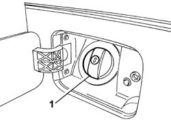
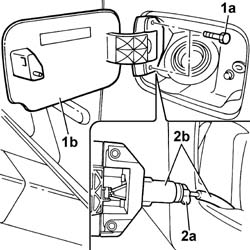
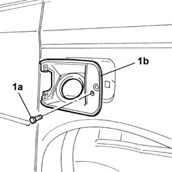
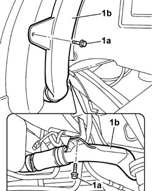
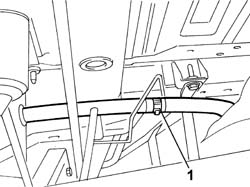
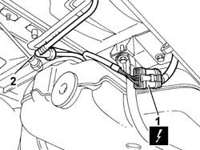
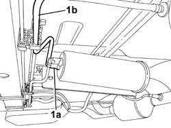
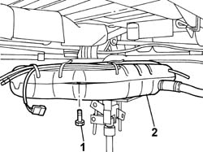

1040A20 FUEL TANK - R + R AND DECANT FUEL FOR VERSIONS WITH EVAPORATION CONTROL SYSTEM
- Path
- Procedures > 10 ENGINE > 1040 FUEL TANK AND PIPES > 1040A FUEL TANK AND COMPONENTS > 1040A20 FUEL TANK - R + R AND DECANT FUEL FOR VERSIONS WITH EVAPORATION CONTROL SYSTEM
- Kind
- repair procedure (removal / refitting; the operation number is the code)
- Applies to
- engines: 2.0 16v; all production periods
- Interactive page
- https://sloeber94.github.io/elrnDB-fUlss/en/#/179006978
Applies to: engines: 2.0 16v; all production periods
 Removing
Removing
 Refitting
RefittingPosition the vehicle on a lift.
Op. 5530B56 BATTERY DRIP TRAY COVER - R.R.
Disconnect the negative battery terminal.
Op. 4450B06 LEFT REAR WHEEL R R
1. Undo and remove the fuel filler pipe cap.

Applies to: engines: 2.0 16v; all production periods
Position the pipe of the tank emptying device in the filler fitting. To facilitate the operation, lift the vehicle at the left rear and proceed to empty.
1. Undo the fixing bolts (1a) and remove the fuel flap (1b) from the housing.
2. Acting on the throttle (2a), separate the flap from the opening cable (2b).

Applies to: engines: 2.0 16v; all production periods
1. Undo the fixing bolt (1a) and remove the filler pipe housing seal (1b).

Applies to: engines: 2.0 16v; all production periods
1. Undo the bolts (1a) fixing the fuel filler pipe (1b).

Applies to: engines: 2.0 16v; all production periods
1. Disconnect the breather pipe.

Applies to: engines: 2.0 16v; all production periods
1. Disconnect the electrical connection for the submerged pump.
2. Disconnect the fuel supply pipe from the rapid connector.

Applies to: engines: 2.0 16v; all production periods
1. Disconnect the rapid connector (1a) and release the evaporation control pipe (1b) from the retaining clip.

Applies to: engines: 2.0 16v; all production periods
Position a hydraulic jack with a suitable support under the fuel tank.
1. Undo the bolts fixing the tank to the bodyshell.
2. Lower the hydraulic jack, disconnect the rapid connector from the fuel pump and remove the fuel tank.

Applies to: engines: 2.0 16v; all production periods
Refitting
RemovingFit the fuel tank on the support tool and fit it in the special housing.
Tighten the bolts fixing fuel tank support belts to torque.
Remove the hydraulic jack and support from underneath the tank.
Connect the electrical connection for the submerged pump.
Connect the fuel supply and return pipes to the rapid connectors.
Connect the breather pipe.
Position the filler pipe in the housing and tighten the fixing bolts.
Fit the seal in the filler housing and tighten the fixing bolt.
Connect the flap opening control cable to the flap and titghten the bolts fixing the fuel flap to the bodyshell.
Fit the fuel filler pipe cap.
Op. 4450B06 LEFT REAR WHEEL R R
Connect the negative battery terminal.
Op. 5530B56 BATTERY DRIP TRAY COVER - R.R.
Remove the vehicle from the lift.